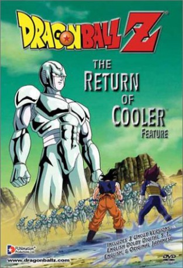
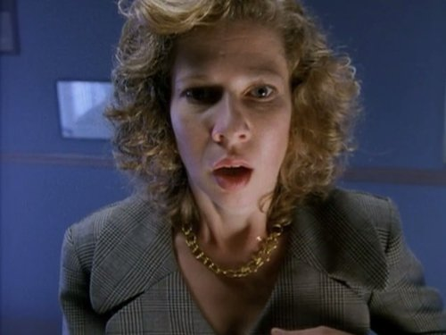

#5460 Dragonball Z - Movie 06: Coolers Rückkehr
Alternativ: Dragon Ball Z: The Return of Cooler (Englischer Titel)
 
 IMDB-Wertung: 7.2 / 10
IMDB-Wertung: 7.2 / 10  Metascore: 0
Metascore: 0 
When New Namek falls under attack by a massive planet of metal and an army of lethal robots, the Guardian of Earth, Dende, reforms the Earths Special Forces to go to New Namek and save his people. Not knowing what to expect, but not expecting what they find, the Z Warriors find themselves landing in the frying pan, for the force behind the invasion of Namek is none other than Koola, Frieza's older brother, who Goku supposedly killed long ago. With Koola more powerful than before, and this time seemingly invincible, the power of a Super Saiyan may not be enough to save the galaxy this time. But Koola and Goku are about to find out that they're both full of surprises.
Jahr: 1992
Dauer: 46 Minuten
FSK: 12
Land: Japan Studio: Kazé GermanyTonspuren: DD5.1 - ,
Untertitel: Deutsch,
Auflösung: 1080p (1920x1080) Größe: 2631 MB
Genre: Action, Sci-Fi, Fantasy, Animation/Trick
Regisseur: Daisuke Nishio
Drehbuch: Peter Greenaway
Soundtrack:
Darsteller:
 Sean Schemmel als Goku
Sean Schemmel als Goku Christopher Sabat als Vegeta / Piccolo / Mr. Popo / Moori
Christopher Sabat als Vegeta / Piccolo / Mr. Popo / Moori Stephanie Nadolny als Gohan
Stephanie Nadolny als Gohan Sonny Strait als Krillin
Sonny Strait als Krillin Kyle Hebert als Narrator
Kyle Hebert als Narrator Laura Bailey als Dende
Laura Bailey als Dende Paul Bandey als Big Green, AB Groupe dub / Dende, AB Groupe dub , uncredited
Paul Bandey als Big Green, AB Groupe dub / Dende, AB Groupe dub , uncredited-  Sharon Mann als Klirin, AB Groupe dub / Guide Robo, AB Groupe dub , uncredited
 Masako Nozawa als Son Gokû / Son Gohan
Masako Nozawa als Son Gokû / Son Gohan Toshio Furukawa als Piccolo
Toshio Furukawa als Piccolo Mayumi Tanaka als Kuririn / Yajirobe
Mayumi Tanaka als Kuririn / Yajirobe Ryô Horikawa als Vegeta
Ryô Horikawa als Vegeta Kôhei Miyauchi als Kame-sen'nin
Kôhei Miyauchi als Kame-sen'nin Naoki Tatsuta als Oolong
Naoki Tatsuta als Oolong- Tomiko Suzuki als Dende
- Toku Nishio als Mr. Popo
- Toshio Kobayashi als Guide Robo
- Kazunari Tanaka als Namekian
- Hisao Egawa als Namekian
- Kinpei Azusa als Mûri
- Ryûsei Nakao als Metal Coola
 Jôji Yanami als Narration
Jôji Yanami als Narration- Andrew Chandler als Meta Cooler
 Bradford Jackson als Oolong
Bradford Jackson als Oolong Mike McFarland als Master Roshi / Yajirobe
Mike McFarland als Master Roshi / Yajirobe Justin Cook als Additional Voices
Justin Cook als Additional Voices Chris Rager als Additional Voices
Chris Rager als Additional Voices- Tiffany Vollmer als Additional Voices
 Cynthia Cranz als Additional Voices
Cynthia Cranz als Additional Voices- Chris Forbis als Guide Robo / Additional Voices
- Nesty Ramirez als Goku, Creative Products Corp. dub
- Apollo Abraham als Kurin, Creative Products Corp. dub / Coola, Creative Products Corp. dub
- Raymond Buyco als Piccolo, Creative Products Corp. dub
- Ethel Lizano als (Creative Products Corp. dub
- Mitch Frankenberger Pellicer als (Creative Products Corp. dub
- E.J. Galang als (Creative Products Corp. dub
- R.J. Celdran als (Creative Products Corp. dub
- Mano Abello als (Creative Products Corp. dub
- David Soon als (Creative Products Corp. dub
- Bob Karry als (Creative Products Corp. dub
- Hazel Lizano als (Creative Products Corp. dub
- Jodie Forrest als Gohan , uncredited
 David Gasman als Goku, AB Groupe dub / Oolong, AB Groupe dub , uncredited
David Gasman als Goku, AB Groupe dub / Oolong, AB Groupe dub , uncredited- Edward Marcus als Meta Cooler, AB Groupe dub / Yajirobe, AB Groupe dub / Genius Turtle, AB Groupe dub / Narrator, AB Groupe dub , uncredited
 Doug Rand als Vejita, AB Groupe dub / Mr. Popo, AB Groupe dub / Moori, AB Groupe dub , uncredited
Doug Rand als Vejita, AB Groupe dub / Mr. Popo, AB Groupe dub / Moori, AB Groupe dub , uncredited
Datei: X:\Kinder Anime\Dragonball Z Movie\Dragonball Z - Movie 06 Coolers Rückkehr (1992, FSK12, 1920x1080).mkv seit 02.02.2017
Festplatte: Kinder-Filme+Trick
 Es gibt insgesamt 19 Filme in der Gruppe 'Kinder Anime\Dragonball Z Movie'
Es gibt insgesamt 19 Filme in der Gruppe 'Kinder Anime\Dragonball Z Movie'